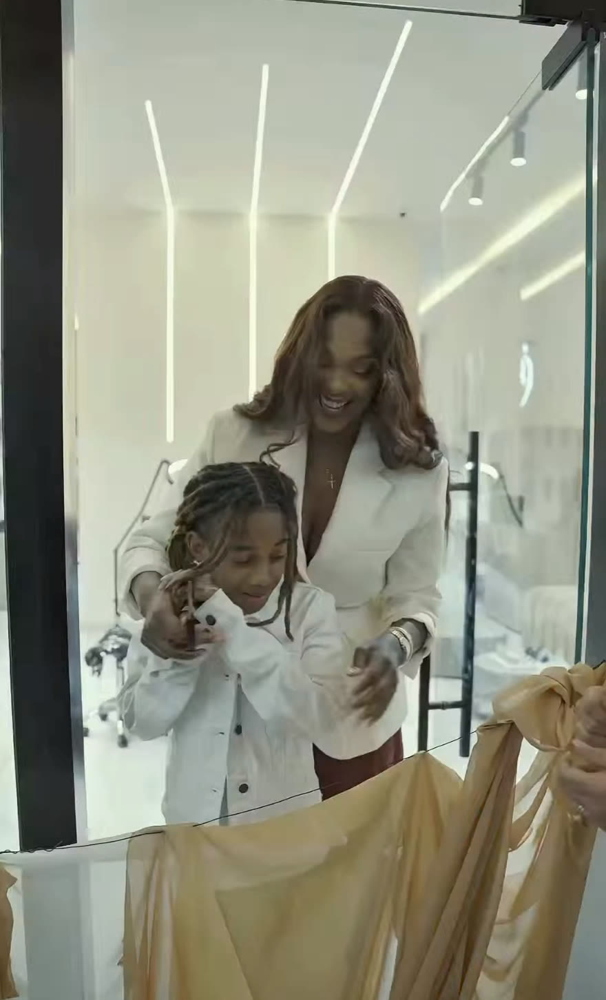

01
Lips Neutralisation
Neutraliser la pigmentation naturelle des lèvres avant une mise en couleur.
Institut de l'Encrier
Institut de l'Encrier
Un institut de beauté permanente et de tatouage à Kinshasa — sourcils, lèvres, et l'attention portée à chaque détail.
Ce que nous proposons
01
Neutraliser la pigmentation naturelle des lèvres avant une mise en couleur.
02
Redessiner et densifier le sourcil, résultat visible avant/après.
03
Une équipe bien formée, pour des projets de tatouage sur rendez-vous.
Galerie


À propos
Fondé en 2025 à Kinshasa par Jessica Bossekota, l'Institut de l'Encrier se présente comme un « community club » plutôt qu'un simple salon — un lieu pensé pour l'attention portée à chaque détail.
Aux soins de beauté permanente s'ajoute le tatouage, assuré par une équipe bien formée.

Rendez-vous
Un premier échange pour parler de votre projet, avant toute séance.
Nous contacter